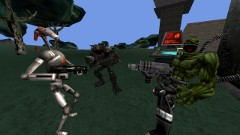
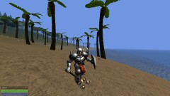

{kind=link}
{kind=link}
{kind=link}
{kind=link}
{kind=link}
{kind=link}
{kind=link}
{kind=link}
{kind=link}

{kind=link}
{kind=link}
{kind=link}


OpenZone is a simple open-source cross-platform FPS/RTS game engine currently still under heavy development. It is intended to be capable of running games similar to Battlezone but with many additional features. It runs on GNU/Linux, Windows and Native Client (inside Google Chrome/Chromium browser).
Compared to Battlezone it has greatly improved FPS functionality. Not only it is possible to walk into buildings, one can also open doors, use keys, elevators, switches, pick up items and use inventory, push and carry objects around, just as one would expect form a FPS/RPG game.
OpenZone uses a simple AABB-based physics similar to Id Quake 1/2/3 or Unreal 1 engines, yet much more powerful. One can e.g. push more than one object at once, objects can be rotated, carried or thrown around. It also provides better damage model; fragile objects like a bottle can be crushed merely by running into them, others must be shot with a heavy weapon or dropped from a great height to receive significant damage.
OpenZone is currently still under development having only limited functionality in several aspects. Networking is still missing, AI is very simple and RTS support is almost non-existent. The current game content is mostly placeholder just to demonstrate engine capabilities. It features a test world, a tutorial and one playable mission.
|  | |||
|  | |||
|
|||
|
|
OpenZone-0.3.90-bundle.zip (29.1 MiB)
Binaries for GNU/Linux (x86_64 or i686 with SSE3) and Windows (x86_64 or i686 with SSE3).
All game data and libraries required to run OpenZone are included.
If you use Google Chrome or Chromium you can play OpenZone in your browser: english | slovene.
Primary site: OpenZone on GitHub
Old/backup site: OpenZone on Google Code
OpenZone engine is licensed under GNU General
Public License version 3 or (at your option) any later version. Game data are obtained from
various sources and covered by many different licences. See individual files named
README.txt and COPYING.txt inside game data archives for details.
Copyright © 2013 Davorin Učakar. Last update: 2014-11-04
{kind=link}